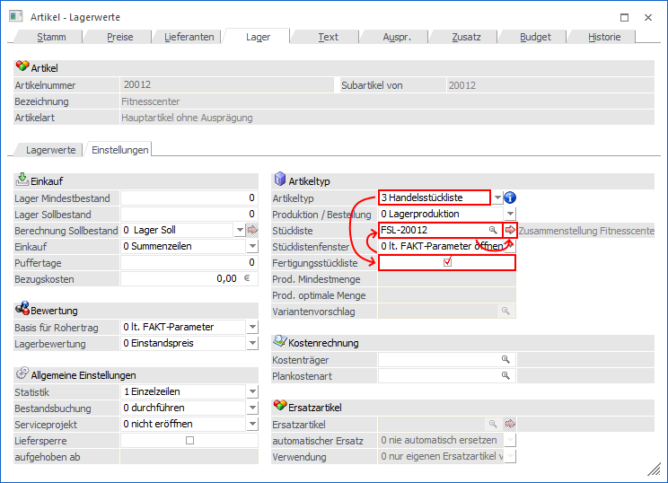

Die Fertigungsstückliste
Eine Fertigungsstückliste (nachfolgende auch "Fertigprodukt" genannt) weist folgende Merkmale auf:
ü Bei einer Fertigungsstückliste kann im Artikelstamm eine Lagerortstruktur hinterlegt werden, d.h. die Nutzung von Lagerorten des LAGERMANAGEMENTs ist möglich.
ü Sowohl für das Fertigprodukt, als auch für die Komponenten, können Chargen und Identnummern verwaltet werden.
ü Im Verkauf wird ein Fertigungsartikel, unabhängig von anderen Einstellungen, immer vom Lager genommen. D.h. es geht nie das Stücklistenfenster auf, wodurch die Stückliste - im Kontext des Verkaufsbelegs - niemals erzeugt wird.
ü Der Verkaufspreis der gesamten Stückliste (sogenannte "Fertigprodukt") muss nicht der Summe der Komponenten entsprechen.
ü Im Verkaufsbereich stammt der Einstandspreis der Fertigungsstückliste aus den Stammdaten des Artikels. Dieser wird dabei wiederum über die Fertigung des Produkts gebildet und entspricht der Summe der Einstandspreise der Komponenten.
ü Zur Fertigung einer Fertigungsstückliste steht das Programm "Fertigung" zur Verfügung, in welchem geplant und gefertigt werden kann.
ü Wird eine Fertigungsstückliste zur Herstellung einer anderen Stückliste benötigt (als sogenanntes "Halbfertigprodukt"), so ist eine Hinterlegung generell möglich. Eine Besonderheit bildet hierbei das WinLine LAGERMANAGEMENT. Wird dieses bei dem "Halbfertigprodukt" eingesetzt, so muss die Option "Immer vom Lager" aktiviert werden.
ü Unter Zuhilfenahme der Einkaufsprogramme ("Bestellvorschlag erstellen", "Bestellvorschlag bearbeiten", etc.) können automatisch Fertigungsbelege erstellt werden.
ü Um eine gezielte Beschaffung von Komponenten für bestimmte Fertigungen zu gewährleisten, stehen im Einkaufsprogramm "Bestellvorschlag erstellen" spezielle Selektionen zur Verfügung.
ü Die Fertigprodukte werden in der Statistik geführt.
ü Die Komponenten werden nicht in der Verkaufsstatistik
ü Die Fertigprodukte werden am Lager geführt.
ü Die Komponenten werden am Lager geführt.
Anlage einer Fertigungsstückliste
Die Anlage einer Fertigungsstückliste erfolgt im Programmpunkt…
1 WinLine FAKT
1 Stammdaten
1 Artikelstamm
1 Artikel

Zunächst wird der Artikel definiert, der eine Fertigungsstückliste werden soll. Die Anlage unterscheidet sich dabei zunächst nicht von der eines Standard-Artikels. Im Register "Lager" (Unterregister "Einstellungen") werden dann folgende Einstellungen getroffen:
Ø Artikeltyp
An dieser Stelle wird der Artikeltyp "3 - Handelsstückliste" eingetragen.
Ø Fertigungsstückliste
Damit die Handelsstückliste als Fertigungsstückliste fungiert, wird die Option "Fertigungsstückliste" aktiviert.
Ø Stückliste
Hier kann die Stückliste der Fertigung hinterlegt werden.
Durch Anwählen des  Buttons kann
dabei sofort die Stückliste definiert werden (nähere Informationen entnehmen Sie
bitte dem Kapitel Stücklistenstamm).
Buttons kann
dabei sofort die Stückliste definiert werden (nähere Informationen entnehmen Sie
bitte dem Kapitel Stücklistenstamm).
Behandlung der Stückliste im Lager
Die Fertigungsstückliste bzw. deren Komponenten werden wie folgt behandelt:
ü Die Zubuchung des Fertigprodukts erfolgt immer über die Fertigung. Hierbei wird der Zugang mit Buchungsschlüssel "L" gebucht, wobei in der Regel zum Einstandspreis der Komponenten bewertet wird.
ü Die Komponenten werden bei der Fertigung vom Lager (mit dem Buchungsschlüssel "P") zum Einstandspreis abgebucht.
ü Bei Druck des Lieferscheins erfolgt für das Fertigprodukt eine Abbuchung mit Buchungsschlüssel "V", welche zum Einstandspreis des Artikels lt. Artikelstamm bewertet ist.
ü Bei Druck der Rechnung erfolgt für das Fertigprodukt eine Buchung mit Buchungsschlüssel "U", welche zum Verkaufspreis des Belegmittelteils bewertet ist.
Andruckmöglichkeiten der Fertigungsstückliste im Beleg
Grundsätzlich wird immer der Fertigungsartikel ausgedruckt. Die Komponenten können wiederum nur im Fertigungsprozess ausgegeben werden, was in den Standard Formularen (P02W51MESOFSL bis P02W54MESOFSL) auch getan wird (Flag "H" im Formular Editor). Die